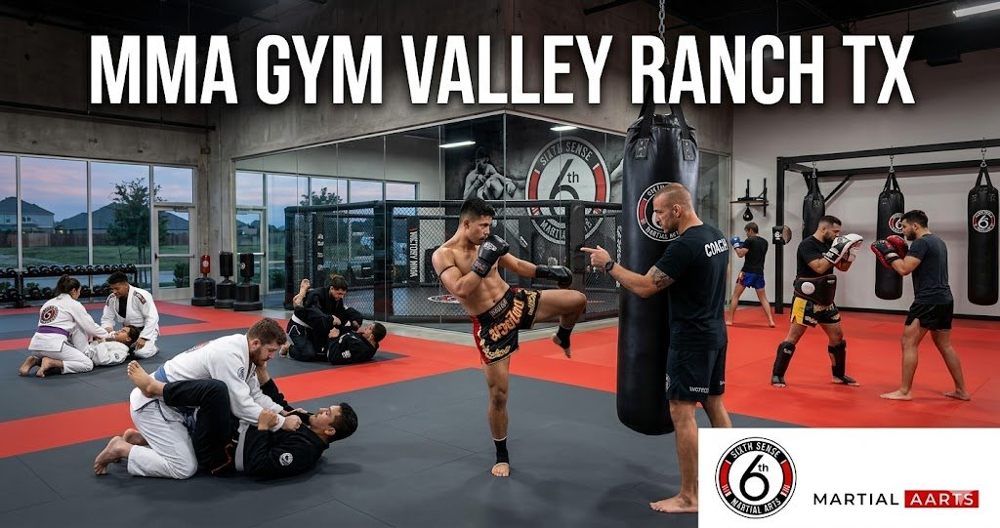
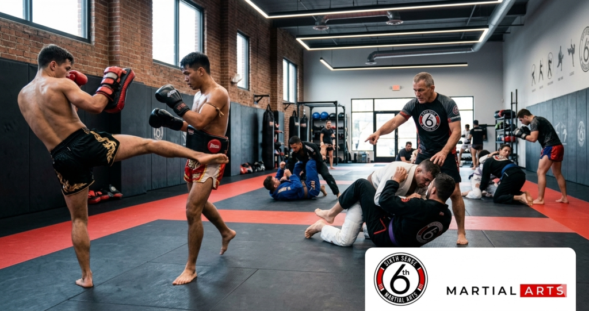
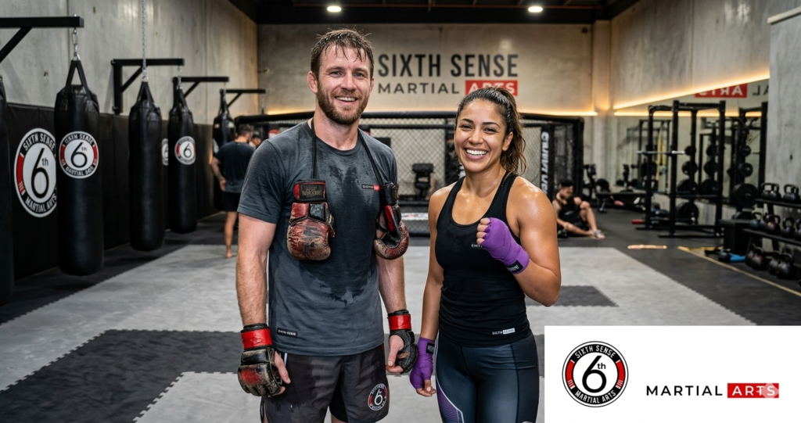

Who Is Behind Sixth Sense Martial Arts The MMA Gym Valley Ranch TX

If you’ve been searching for an mma gym valley ranch tx and keep running into the same handful of options then you already know how hard it is to find a place that actually trains you instead of just taking your membership fee and pointing you toward a punching bag. The DFW area has plenty of gyms. Not all of them are built for real development. Sixth Sense Martial Arts at 817 S MacArthur Blvd #100 in Coppell TX is different and if you’ve been looking for mma classes valley ranch this is the place worth your time.
This isn’t about hype. It’s about what actually happens when you walk through the door and what your training looks like six months from now.
The MMA Gym Valley Ranch Has Been Waiting For
People in the valley ranch area have options. There’s georges mma and boxing gym that comes up in searches pretty often and george’s mma gets decent reviews for boxing classes and striking training. George’s gym has been around and some people in the dfw area have trained there. But when you’re looking for a complete mixed martial arts irving valley ranch experience that covers brazilian jiu-jitsu and muay thai and kickboxing under one roof with personalized attention and a structured program then the conversation shifts pretty quickly to Sixth Sense.
Coach Mattheus Galvao built this training center around one idea. Every student regardless of age or fitness level deserves skilled instruction and a real path forward. Not just a schedule and a facility to show up to. An actual curriculum with milestones and a coach who knows your name and your goals.That’s what separates a real mma gym from a boxing gym in irving that offers classes but doesn’t really build fighters or athletes.
What People Around Valley Ranch Are Actually Searching For
The Problem With Most MMA Options Near Valley Ranch Irving
Here’s the thing about searching for mma near valley ranch irving. A lot of what comes up is either a pure boxing gym focused only on striking training or a Brazilian jiu-jitsu only program that doesn’t touch stand-up at all. And then there’s the places that call themselves an mma gym but the instruction is inconsistent and the coaches rotate so often that you never build a real relationship with the person teaching you.
Real mixed martial arts irving valley ranch training means you’re learning to strike and grapple. It means muay thai valley ranch classes that teach authentic muay thai footwork and clinch work and not just cardio kickboxing rebranded as combat sports. It means jiu jitsu valley ranch sessions where you’re drilling actual technique and learning to spar safely with progression built in.
Most gyms deliver one or the other. Very few deliver both well.
Not Knowing Where to Start as a Beginner
This one comes up constantly. Someone wants to try mma training near valley ranch and they don’t know if they should start with bjj valley ranch texas classes or muay thai valley ranch sessions or kickboxing valley ranch tx. The answer depends on your goals and your body and what you’re actually trying to get out of training. But the bigger problem is that most gyms don’t help you figure that out. You sign a membership and figure it out yourself.
At Sixth Sense the coach actually talks to you before you start. You tell them whether you’re looking to compete or just get in the best shape of your life or learn self-defense and they build a starting point around that. That kind of personalized attention isn’t something you find at a large facility with rotating instructors and a packed class schedule.
The Intimidation of Walking Into a Fight Gym Valley Ranch
Plain and simple most people who haven’t trained before are nervous about walking into a fight gym valley ranch for the first time. You picture a room full of experienced fighters sizing you up. You wonder if you’ll embarrass yourself. You question whether it’s even the right place for someone who has never sparred before.
The welcoming environment at Sixth Sense is something that comes up in every honest review from new students. Beginners are paired with the right partners. The instruction is clear and the pace is managed. Nobody’s throwing you into sparring on day one and calling it training. The positive atmosphere here is real and it’s maintained deliberately because the coaching staff knows that people train longer and get better results when they feel safe and supported.
How Sixth Sense Martial Arts Solves Every One of These Problems
Real MMA Classes Valley Ranch – Striking and Grappling in One Program
The program at Sixth Sense is built around complete combat sports development. That means muay thai valley ranch classes that cover authentic muay thai technique including kicks and knees and elbows and clinch work that actually transfers to a real fight or a competition setting. And it means bjj valley ranch texas training that goes from fundamental positions through guard work and submissions and live rolling with technique-first instruction.
When you combine striking training with brazilian jiu-jitsu you get mixed martial arts irving valley ranch in the truest sense of the phrase. You’re not doing kickboxing valley ranch tx cardio classes disguised as martial arts. You’re building real skill across two of the most effective combat sports systems in the world.
And the schedule is built so that students can attend both disciplines without having to choose between them.
A Training Center Built for Every Level – Beginner Through Competitor
One of the things that makes this mma gym different from a standard boxing gym in irving is that the program runs from complete beginner through intermediate and up to amateur and professional competition level. You don’t have to be looking to compete to train here. Most students are recreational athletes who want fitness and self-defense skills and a community. But if you are looking to compete the coaching staff knows how to prepare you for that too.
George’s mma and george’s gym get mentioned in a lot of reviews as solid options for boxing classes and striking training specifically. But for someone who wants a full program that includes jiu jitsu valley ranch sessions and muay thai and kickboxing valley ranch tx and a clear progression path Sixth Sense offers something more complete.
| Program | Who It’s For | Disciplines Covered | Format |
|---|---|---|---|
| Intro to Martial Arts | Complete beginners | Fundamentals BJJ and Muay Thai | Gi and No-Gi |
| Adult BJJ | All skill levels | Brazilian jiu-jitsu technique and sparring | Gi and No-Gi |
| Adult Muay Thai | Beginner to intermediate | Authentic muay thai striking | No-Gi |
| Kickboxing | All levels | Kickboxing and conditioning | No-Gi |
| MMA Competition Prep | Intermediate and advanced | Full mixed martial arts and spar sessions | Combined |
| Kids and Teen Programs | Ages 4-17 | BJJ fundamentals and anti-bullying | Gi |
Personalized Attention That Most Gyms Don’t Offer
In a large facility with 60 people in a class you’re not really getting instruction. You’re getting demonstration and then you figure out the rest. That’s not how skill develops. That’s how bad habits develop.
The class sizes at Sixth Sense are intentionally small. Coach Mattheus and the experienced instructors know each student’s technical weaknesses and their goals and their pace. That’s how you actually improve. That’s how a beginner goes from not knowing what a guard position is to rolling confidently with a training partner in a matter of weeks rather than months.
Personalized attention is what makes this training center the premier mma gym in the martial arts valley ranch tx area and it’s the reason students stay for years instead of dropping off after a few months.
Inside the Sixth Sense Program – What Training Actually Looks Like

Muay Thai Valley Ranch – Authentic Striking From Day One
The muay thai program here isn’t cardio boxing rebranded. It’s best muay thai instruction that covers stance and footwork and the full eight limbs of the art. Kicks elbows knees and punches all get attention in a structured class format. The striking training builds from fundamental technique through combination work and eventually into controlled sparring for students who are ready for it.
For students who’ve searched for a muay thai gym near valley ranch and ended up at places that felt more like a fitness class than a real martial arts program this is where the difference becomes obvious within the first session.
Jiu Jitsu Valley Ranch – Ground Work That Actually Prepares You
Brazilian jiu-jitsu is where most real fights end up. And it’s where most stand-up focused gyms leave you completely unprepared. The bjj valley ranch texas program at Sixth Sense covers the fundamental positions and escapes and submissions that make up the core of the art and then progresses into more advanced technique as students develop.
The no-gi format is also available which is important for students focused on self-defense because real situations don’t come with a gi to grab onto. Both formats are trained here and both develop different but complementary skills.
Kickboxing Valley Ranch TX – Conditioning With Real Technique
The kickboxing valley ranch tx classes at Sixth Sense aren’t just circuit training with gloves. They cover actual kickboxing technique with instruction on how to move and generate power and set up combinations. It’s a great entry point for students who want to improve fitness before moving into full mma training near valley ranch and it’s also a solid standalone discipline for people who want effective striking skills without the full grappling component.
Step by Step – How to Join the MMA Gym in Valley Ranch TX
Getting started doesn’t require any experience or any gear beyond what you’d wear to a workout.
- Go to sixthsensemma.com or call 469-972-7800 to ask about the free trial
- Claim your free trial class pass through the short form on the site
- Show up at 817 S MacArthur Blvd #100 Coppell TX 75019 – the facility is accessible from valley ranch parkway and easily found near the valley ranch parkway south corridor
- Meet Coach Mattheus for a short conversation about your goals and experience level
- Attend your first class as a student with zero pressure and zero expectations beyond showing up
- Talk to the coaching staff after class about the right program fit and schedule going forward
What to Bring to Your First Session
Comfortable athletic clothes are all you need. A water bottle. A towel. If you have your own gloves or a gi bring them but don’t worry if you don’t. The instruction team covers everything you need to know before your first class and the welcoming environment means you won’t feel out of place even if you show up with nothing but willingness to learn.
What the First Session Feels Like
You’ll start with a warmup that gets your body ready without throwing you into anything you’re not prepared for. Then the instructor walks through a technique in detail and you practice it with a partner at a pace that matches your level. There’s no pressure to spar on day one. The whole first class is about getting comfortable on the mat and starting to understand how the training is structured.
Most new students say they feel more comfortable than they expected. That positive atmosphere isn’t an accident. It’s built deliberately into how the gym runs.
The Numbers Behind Why MMA Training Near Valley Ranch Works
The fitness benefits of consistent martial arts valley ranch tx training are well documented. A solid mma class burns between 500 and 900 calories per session depending on intensity and the discipline being trained. That’s more than most gym workouts and it’s happening while you’re actually developing a real skill instead of just moving weight around.
Students who train martial arts consistently report an average 65 percent increase in confidence after six months. That number is higher in kids programs but it holds across adults too. The process of learning to spar and improving technique and earning milestones in a program creates a kind of confidence that ordinary gym fitness doesn’t.
For students looking to compete the dfw area has a strong amateur and professional circuit and the coaching staff at Sixth Sense has experience preparing fighters for competition at multiple levels. For students who aren’t looking to compete the self-defense application of both bjj and muay thai valley ranch training is real and practical and transferable to everyday situations.
Georges mma has been mentioned by reviewers in the dfw area as established in 1996 and george’s gym carries a history in the boxing gym in irving space. That history matters. But what matters more for most students today is whether the instruction is personalized and whether the program builds complete fighters and athletes rather than specialists in a single area.
Benefits of Training at the MMA Gym Valley Ranch Relies On
The physical benefits of consistent training here are real and they show up faster than most people expect. Better cardiovascular fitness from muay thai valley ranch sessions. Functional strength and coordination from jiu jitsu valley ranch drilling. Improved flexibility and body awareness from the mat work. Real endurance that carries into everyday life and not just in the gym.
The mental benefits are just as consistent. The discipline of showing up to class when you don’t feel like it. The focus required to drill technique correctly. The calm under pressure that develops from controlled sparring and competition. These are skills that transfer into work and relationships and parenting in ways that most forms of exercise simply don’t touch.
And then there’s the community. Students at Sixth Sense tend to become friends outside the gym. Training together through hard sessions builds a kind of bond that’s genuinely hard to find elsewhere and it’s one of the reasons membership retention here is strong. People don’t quit when they actually enjoy showing up.
Common Mistakes When Choosing an MMA Gym Near Valley Ranch Irving
Choosing a gym based on location alone is the most common one. Being close to valley ranch parkway south is convenient but convenience doesn’t make a program good. The instruction quality and curriculum structure matter far more than whether the facility is next to discount tire and behind cvs.
Signing a long membership before trying a class is another one. Any real training center should offer a free trial before asking for a commitment. That’s how you know whether the instruction style and the atmosphere actually work for you.
Skipping the beginner program to jump into advanced sparring before the technique is solid tends to result in injury and frustration. The curriculum at Sixth Sense is sequenced the way it is because it works. Intermediate students who came from other gyms and tried to skip the foundation work almost always have to go back and rebuild it anyway.
Judging a muay thai gym or bjj program by the facility size alone is a mistake too. A skilled and knowledgeable coach in a modest space will develop you faster than a premier facility with rotating and underprepared instructors.
Why Sixth Sense Is the Right MMA Gym for Valley Ranch and Irving TX
When someone reads a review of george’s mma and boxing gym or looks at georges mma they’re usually trying to figure out whether it’s worth the drive and whether the program fits their goals. George’s mma is known for boxing classes and striking training in the irving area and that reputation is earned in its own right.
But for someone who wants complete martial arts valley ranch tx training with both striking and grappling and a coach who tracks your development and adjusts the instruction to match your level the answer points clearly to Sixth Sense.
Small class sizes. Experienced instructors. A real curriculum that builds from beginner through competition level. A welcoming environment that doesn’t make new students feel like outsiders. A supportive coaching team that actually knows whether you improved this week. And a free trial so you can find out for yourself before committing to anything.
You can check out the Adult BJJ Classes page and the Adult Muay Thai Classes page to see what the programs look like in detail. The Kids BJJ Classes and Teen BJJ Classes pages cover the family programs. And if you want to read more about how MMA and self-defense training works in practice the MMA Gyms Near Me and Fight Training Near Me blog posts are worth a look.
What Students From Valley Ranch and Irving Say About Sixth Sense
One student who’d been a reviewer of george’s gym and had trained at a boxing gym in irving for two years came to Sixth Sense specifically to add bjj valley ranch texas training to his striking background. He said the transition into grappling felt manageable because the instruction was clear and the drilling pace matched his actual level rather than assuming he’d figure it out on his own.
A mom from the valley ranch area brought her son in for kids bjj and ended up signing up herself for the adult muay thai valley ranch program. She said she’d tried kickboxing at another gym near dallas and felt like a number. At Sixth Sense she said the coach knew her name by the second class and checked in on her technique every session.
One athlete who came in specifically looking to compete said the coaching staff at Sixth Sense was the first group he’d trained with that had a real plan for his competition preparation rather than just letting him spar and hoping for the best. He won his first amateur bout six months into training.
Your MMA Gym in Valley Ranch TX Is Ready – Start Training This Week

If you’ve been searching for mma gym valley ranch tx or looking at options like george’s mma or a boxing gym in irving and wondering whether there’s something more complete then Sixth Sense Martial Arts is the answer to that search. The program covers mma classes valley ranch residents actually need: real bjj valley ranch texas grappling and authentic muay thai valley ranch striking and kickboxing valley ranch tx conditioning all under one roof with a coaching staff that’s skilled and knowledgeable and actually invested in whether you improve.
This is a fight gym valley ranch families and athletes trust because the instruction is real and the community is genuine and the results show up on the mat and in everyday life.Don’t wait to find out whether it’s the right fit. The free trial exists so you can experience it for yourself before committing to anything.
Explore More:
- Adult BJJ Classes
- Adult Muay Thai Classes
- Teen BJJ Classes
- Kids BJJ Classes
- MMA Gyms Near Me
- Fight Training Near Me
- Martial Arts Near Me
- Mixed martial arts near me
Follow Sixth Sense on Instagram: https://www.instagram.com/sixthsensemma
FAQ’s
It’s a real training center with structured programs in brazilian jiu-jitsu and muay thai and kickboxing. The instruction is technique-first and the curriculum builds from beginner through amateur and professional competition level. It’s not a cardio class with combat sports branding.
No. The program is designed to take complete beginners through a structured intro curriculum before moving into more advanced technique and sparring. Most students who’ve trained here had zero experience when they started.
The program covers brazilian jiu-jitsu and authentic muay thai and kickboxing. Combined these form the foundation of mixed martial arts irving valley ranch training that works for both self-defense and competition.
Yes. The muay thai classes start with stance and footwork and fundamental striking technique before building into combinations and clinch work. Beginners aren’t thrown into sparring before they’re ready.
The bjj program at Sixth Sense covers both gi and no-gi training with a structured curriculum that progresses students through fundamental positions and escapes and submissions. The no-gi format is especially useful for self-defense application.
Yes. Kickboxing is offered as a standalone program as well as part of the broader mma training near valley ranch curriculum. It’s a good starting point for students who want to improve fitness and striking before adding grappling.
Both. Sixth Sense runs kids and teen programs in bjj that focus on fundamentals and anti-bullying alongside the adult programs. Families can train together at the same facility.
The gym is at 817 S MacArthur Blvd #100 Coppell TX 75019 which is a short drive from the valley ranch parkway area. It’s easily accessible from the irving side of the dallas metro.
Georges mma and boxing gym is known for boxing classes and striking training with a history in the dfw area. Sixth Sense offers a complete program covering striking and grappling with personalized attention and smaller class sizes. For students who want complete mma training rather than boxing-focused instruction the programs are genuinely different.
Yes. Women train in all programs at Sixth Sense and the instruction is mindful of pairing and pacing for new female students. The Women’s Self-Defense content on the site covers more on what that looks like in practice.
The free trial gives new students access to real classes with actual instruction and a chance to meet the coaching team. There’s no long-term commitment required. Go to the landing page to claim your spot.
Call: (469) 972-7800 Email: info@sixthsensemma.com Visit: 817 S MacArthur Blvd #100 Coppell TX 75019 Free Trial: Claim Your Spot
Train with us in Coppell
The first class is free. Shorts, a t-shirt and a water bottle. We lend the rest.
Book a free class